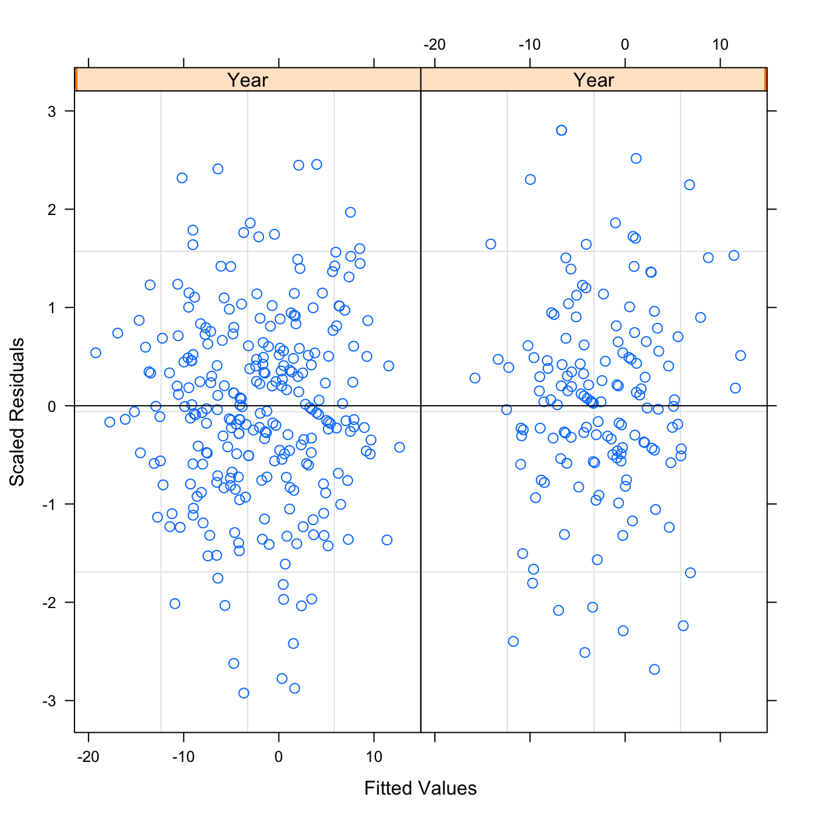
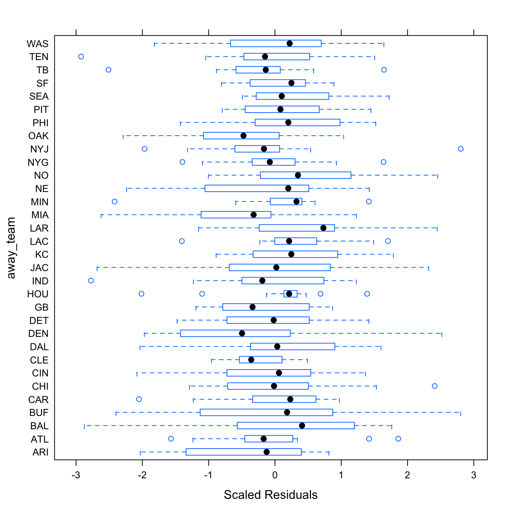
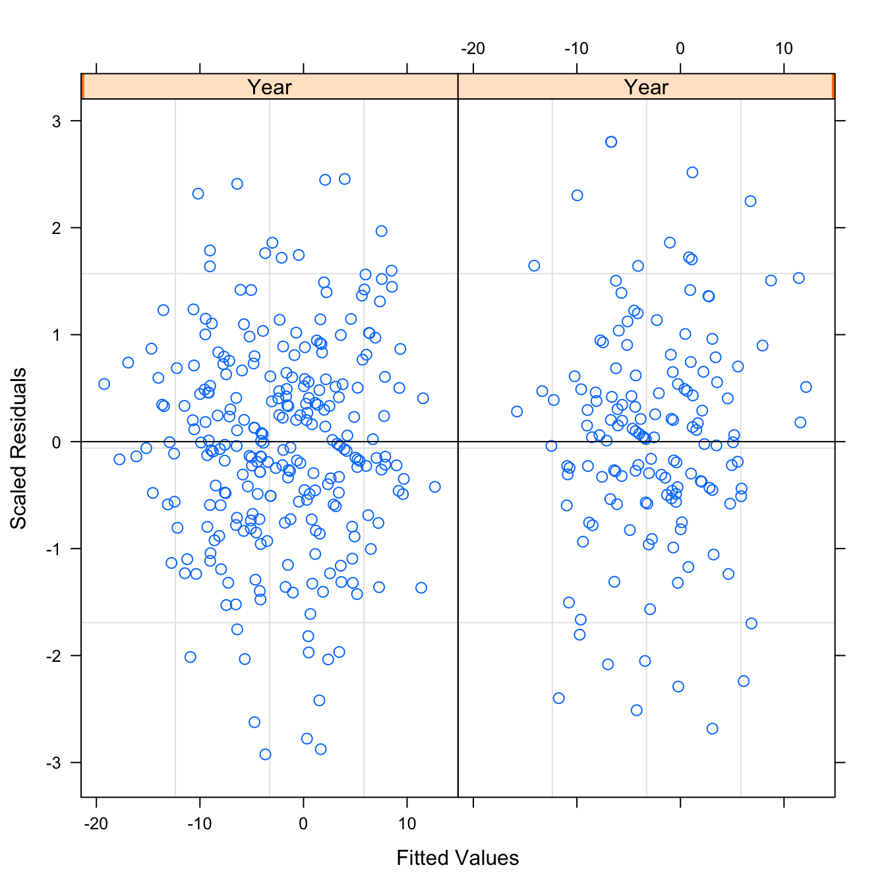
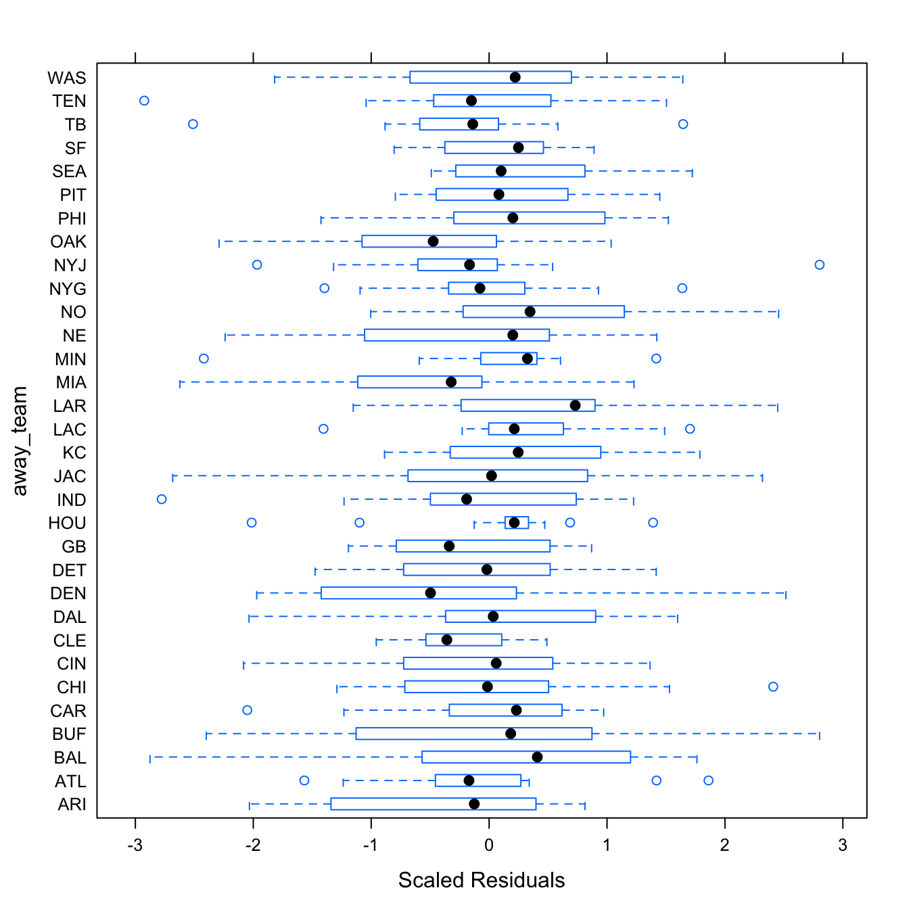

Chapter 6 Appendix
6.1 Example Row of Dataframe used for Modeling the Game Score
Table shows one row of the dataset used for modeling. For size purposes, I included just general columns for the key variables used in modeling, but there are individual columns for both the home and away teams that show the statistics of each team. The DVOAs listed are percentages. My mixed-linear models utilized only the listed variables, and transformations of the listed variables.
6.2 Modeling Number of Observations
| Final Number of Obsv. | Obsv. at Time | Total Ticket Number | Total Cash | Week |
|---|---|---|---|---|
| 188 | 132 | 1467 | 210373 | 10 |
Figure 6.1: Diagnostic Plots for Obsveration Number Model
Table is an example row of the dataframe used to model the number of observations that will be in a series based on the amount of cash, tickets and observations up to a time \(t\).
Table displays the parameters for this model, while Figure shows the diagnostic plots for this model. The residual plots show that a mixed linear model is a good approach. The residuals, while not perfect, seem to follow the normal distribution and the residuals are relatively evenly distributed for each week – the random effect.
6.3 Example Row of Test Data set with Probabilities
The test data set includes all the same columns shown in , in addition to the following key columns (and more for each of the different betting strategies). Using the K1 betting strategy for the game between the Indianapolis Colts and Jacksonville Jaguars on November 11, 2018, the spread at the first decision point was the away team, the Jaguars (+3). At this decision point spread, I expect the away team to beat the spread with a proportion of \(1 - 0.444 = 0.556\). If the Bet Team variable is equal to 1, it means the bet will be on the away team. With an expected value of betting on the Jaguars (+3) of 0.0676, the K1 betting strategy calls for me to bet on the Jaguars. My allotment for this bet is 6.76% of my current bankroll. If the future forecasted spread were to make the game more advantageous to bet on, in terms of expected value, then I would only be one-third of my allotment now. However, the forecasted future spread has the Jaguars (+2.5), which would be a much worse bet. The expected value of the Jaguars (+2.5) is not only lower than our expected value at the first decision point, but it is negative. Because the expected value would lower by betting on the game at the number my DLM forecasts for the spread, I bet my full allotment at Jaguars (+3), and there will be no future bet, regardless of where the spread actually does move. The Future Bet Team column refers to the fact that because the simulated probability is below 0.5, I would bet on the away team (the Jaguars), if I were to make a future bet.
6.4 Diagnostics for Random Effects in Mixed-Linear Models for the Score Difference
Figures and show the diagnostic plots for the random effects of the two mixed linear models. The residuals seem relatively consistent throughout the groups, and the mixed linear models seem to fit both models appropriately.
Figure 6.2: Team-Specific Model Diagnostics by Away Team Group
 

Figure 6.3: Betting-Trend Model Diagnostics by Away Team and Year Group